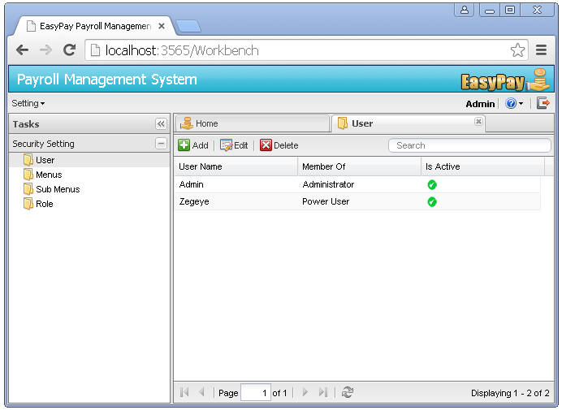
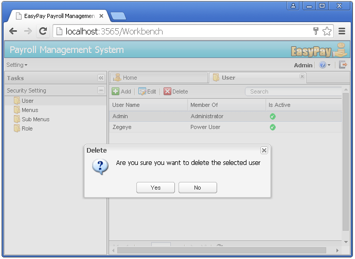

Managing User Accounts
Adding new users
Once logged in using the SAA, to add a new user follow the following steps.
Click on the Security Settings menu -> Click on the user sub menu -> a new user management page will be displayed as follows.

click on the Add button -> a new window will pop up -> Add user name, password and check the IsActive property -> then select the Account Type/ Role from the User Roles options -> then click on Save. A new user with the specified role type is now created.

Editing existing users
Once logged in using the SAA, to edit the information on an existing user, follow the following steps.
Click on the Security Settings menu -> Click on the user sub menu -> a new user management page will be displayed as follows.
Select or click on a particular user from the users grid -> then click on the Edit button -> a new window with details of the existing record will pop up -> after making all the necessary changes, then click on the save button.
Removing users
Once logged in using the SAA, to remove a particular user account from the system, follow the following steps.
Click on the Security Settings menu -> Click on the user sub menu -> a new user management page will be displayed as follows.
Select or click on a particular user from the users grid -> then click on the Delete button -> the system displays a dialog box inquiring the user to confirm his actions. If user selects "YES", the system will automatically remove the user account from the database. If user selects "NO", the system halts the process of removing the user account from the database.
